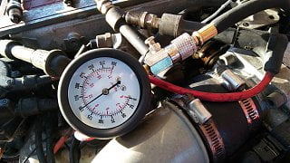
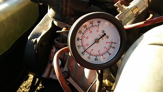
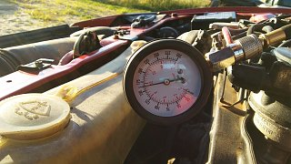
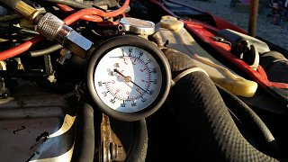
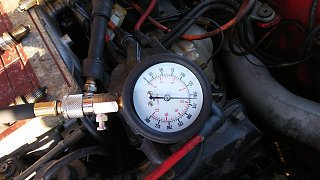

-
hi all. here I post the link to recorded engine sound. I am not sure if it means a crank case problem (crankshaft slide bearings) or only a valvetrain issues… pls help to diagnose this.. engine starts easy, first I hear knocking for few seconds, then engine seems to run normally. Oil pressure gauge which is on board shows about half of the scale . Pls notice clock like sound when engine runs on idle. It staqts immediately. Is loud at the beginnig and goes silent frequently. I am going to measure cylinder pressure but have to clean engine around spark plugs first to avoid getting dust into cylinders
-
So what do You think about the knocking and tapping? I will try to measure cylinder pressure today . Question is, do I need to have spark plugs connected to the wires when doing test? I do not want to damage ignition module or ECU of the engine… My plan is to get out all spark plugs, and turn the engine with open throttle with gauge connected to cylinders one after another… Is it good way to take a measurements? should I disconnect fuel system? Nothing bad will happen to electrical system ? thanks a lot
-
_Ok so here are measurments.... The last one which i cant upload because is too big was showing about 165 psi.... So i guess it is not so bad at the end? But without sparkplugs engine was ratling and clicking terrible… Like something was loose inside....
question - is it hard to remove oil pan?
I would like to check the piston rods bearings…
thanks a lot    Last edited by morda; 07-17-2017, 02:40 PM. Reason: reason - more thoughts in topic :) -
Sounds pretty serious, that's about all I can say and I've never tried to remove the sump with the engine in the car. Before doing that I'd try to isolate the noise, remove the valve covers to make sure there is not a broken valve spring or something. -
Been through this, there is no good way to drop the pan without pulling the motor. One thing you might want to try is getting a tube you can listen through, a few cm wide and a half meter long or a bit more, and pointing it at different parts of the motor to isolate the noise. Also put a magnetic drain plug in the oil pan, or if you have a magnetic part grabber that will fit inside the drain plug hole you can try that, and see if there are a lot of metal shavings in the oil pan. -
If you chain up the engine you can remove the front control arms and the subfame to get the pan out. You also need to let the steering rack dangle. It is easier just to pull the engine if you have to get to it, I've been there with a rusty oil pan on a freshly done swap. -
hi, thanks for tips, looks like it is better to pull the engine. I have no possibility to put a car into a garage so it is not a good idea to take oil pan only anyway.... especially if it requires a lot of disassembly work.
anyway - what do You think about cylinder pressure values? engine was cold…
I have some else things to finish and clean up the mess with other cars, so ZX has to wait a bit.

Copyright © 2006–. All rights reserved. Privacy Policy